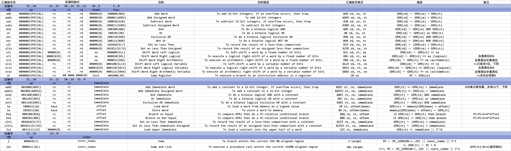

计算机组成原理学习笔记
20220306 定点数运算
原码、反码、补码、补码加减法
（范围：课件4-2P1-P16）
原码：符号位+绝对值的二进制表示。
反码：除符号位外，按位取反。
补码：若原数$\ge 0$，补码为本身。若原数$< 0$，补码为反码$+1$。
！！！求反码和补码不动符号位。
补码加法：
- $[x + y]_\text{补} = [x]_\text{补} + [y]_\text{补} \pmod{2^{n+1}}$ ($x=x_0…x_n$)
补码减法：
- $[x - y]_\text{补} = [x]_\text{补} + [-y]_\text{补} \pmod{2^{n+1}}$ ($x=x_0…x_n$)
溢出：
- 两正数加，变负数，正溢（大于机器所能表示的最大数）
- 两负数加，变正数，负溢（小于机器所能表示的最小数）
浮点数溢出：

溢出检测：


双符号位中：符号位是次高位。
- 00: 正数
- 01: 正溢（负数）
- 10: 负溢（正数）
- 11: 负数
（有个傻子写作业列竖式算都能一直算错，我不说是谁）
除法
（范围：课件4-2P18-P26）
人工除法时，人可以比较被除数（余数）和除数的大小来确定商1（够减）或商0（不够减）
机器除法时，余数为正表示够减，余数为负表示不够减。不够减时必须恢复原来余数，才能继续向下运算。这种方法叫恢复余数法，控制比较复杂。
不恢复余数法（加减交替法）
- 余数为正，商1，下次除数右移做减法；
- 余数为负，商0，下次除数右移做加法。
控制简单，有规律。
原码除法：
- 设有$n$位小数：被除数 $[x]$原 $=x_f.x_{n-1} … x_{0}$ 、除数 $[y]$原 $= y_f . y_{n-1} … y_{0}$ 。
- 则有 $x / y = [q]$ 原 $= ( x_f \oplus y_f ) + ( 0 . x_{n-1} … x_{0} / 0 . y_{n-1} … y_{0} )$

不恢复余数除法（加减交替法）


恢复余数除法

202203++
参考
20220324 Verilog单周期CPU设计
P14也可以看，FPGA也可以（总之都可以……只要有时间（xs））
重点：语法
可选：IP核调用、时钟、RAM
设计实例
可参考：设计实例、单周期CPU设计（CSDN）
目标：设计五条指令、有仿真时序图，成功运行，程序可选
设计实例有45条6类指令，基本指令为37条，扩展指令8条，操作码列出（首先列出操作指令、操作码、指令格式），PC变化明确。
工程文件：.xpr
源文件：.src（sources内有IP核、.v）
结构：ALU、CPU核、指令存储器instrMem、多路复合器MUX、通用寄存器组regFile、CPU顶层CPUtop
报告：画数据通路、列控制信号（需要哪些信号和值）、相互作用关系。
20220325/20220403 lab 2
如果不能正常运行.jar文件需要检查Java环境。
使用MARS运行以下代码，观察寄存器值和数据区(.data)值，可以大致了解如何对应数据存储器地址以及对应值。
1 | # test value |
MARS中的Help包含所有MIPS指令以及相应描述，可以参考。
一些可以参考的博客：
- 《初学计算机组成原理之MIPS指令集及汇编》
- MIPS汇编语言学习笔记(系列)
- 【十分钟教会你汇编】MIPS编程入门（妈妈说标题要高大上，才会有人看>_<！）
- MIPS汇编——指令学习笔记
- 31条指令单周期cpu设计(Verilog)-(一)相关软件
- MIPS 指令集(共31条）
- (73条消息) MIPS汇编快速入门_千灵域的博客-CSDN博客_mips汇编
基本指令与对应机器码表：

翻译得到的汇编指令：
1 | lui $t0, 0x1000 |
20220403 设计作业
选型：RISC-V
Verilog简介
模拟电路：工作在模拟信号下的电子电路
数字电路：工作在数字信号下的电子电路
模拟信号在时间和数量上的变化都是“连续”的。
数字信号在时间和数量上的变化都是“离散”的。
大多数的大规模集成电路都属于数字电路。
可编程逻辑器件（Programmable Logic Device）：允许用户自行修改内部连接的集成电路。PLD的逻辑功能（通过改变内部各单元电路之间的连接来改变）可以由使用者通过编程来设定。
常用PLD：
- 复杂可编程逻辑器件（Complex Programmable Logic Device, CPLD）：基于“乘积项”的与或逻辑阵列
- 现场可编程门阵列（Field Programmable Gate Array, FPGA）：基于“查找表”的CLB阵列
什么是FPGA？
一种可通过编程来修改其逻辑功能的数字集成电路（芯片）
与单片机的区别？
对单片机编程并不改变其电路的内部连接结构，只是根据要求实现的功能来编写运行的程序（指令）
数字系统设计流程：
逻辑设计（前端）$\rightarrow$ 电路实现（后端）$\rightarrow$ 系统验证
什么是HDL？
硬件描述语言（Hardware Description Language, HDL）：用于描述数字电路结构和功能的语言。
HDL可以在不同的层次对数字电路的结构、功能和行为进行描述。
（前端）逻辑设计：设计数字系统功能。
电路实现（后端）：
HDL所描述的电路可以通过综合工具（EDA）将其转换为门级电路网表，然后将其与某种工艺的基本元件逐一对应起来，再通过布局布线工具转换为电路布线结构。
常见的硬件描述语言：
Verilog HDL和VHDL
Verilog和C的区别：
Verilog是硬件描述语言，在编译下载到FPGA之后，会生成电路，所以Verilog时并行运行的；
C语言是软件编程语言，编译下载到单片机后，是存储器中的一组指令。而单片机处理软件指令需要取址、译码、执行，这个过程是串行执行的。
Verilog学习方法：
Verilog HDL作为一种高级的硬件描述语言，其很多语法现象与C语言非常相似，因此在C语言的编程基础上去学习Verilog非常容易。
但在学习过程中要培养硬件设计的思想，把新概念与硬件结构联系起来，着重理解Verilog的“并行”特性。
20220409
安装gcc-riscv:
node:
（自动更新npm）
riscv-none-embed-gcc路径：~/.local/xPacks/@xpack-dev-tools/riscv-none-embed-gcc/10.2.0-1.2.1/.content/bin/riscv-none-embed-gcc
THU计组资源：
参考：
UC Berkeley CS61C Lecture 7 (LW/SW) offset
20220411
时序逻辑：存储
组合逻辑：（与、或的组合逻辑）与逻辑的输入是op、funct（R型op一致）识别指令，或逻辑识别信号。
一条微程序（由微指令构建）决定一组控制信号。
RISC-V 整理
官方说明手册：
建议看marked-part，指令的操作都有标出来。
安装gcc-riscv:
编译方法：riscv-none-embed-gcc inverse.c -S -march=rv32im -O1 (gcc-riscv可能需要找到路径执行或者设置环境变量)。
LW/SW的offset问题：
UC Berkeley CS61C Lecture 7 (LW/SW) offset
模拟器：
从编译器得到的.s文件会有一部分模拟器执行不了的内容，删掉就行。
关于存储器IP：
建议使用dist_mem_gen (在存储类IP中)，没有读取延时。blk_mem_gen有至少一周期延时，会导致PC和instr对不上的问题。
LW和SW汇编写法：（虽然没完全明白，但这样已经能跑了）
1 | int qpow(int base,int exp,int mod); |
作业代码：
可以参考代码和报告获得一部分信息（虽然也不知道够不够详细）
20220521
verilog语法note：
对于case语句，若多个情况执行同一个语句块，可以写成以下形式：
1 | case (param) |